💍 Аксессуары
 Амулет ВумпоЭпический · вес 2
Амулет ВумпоЭпический · вес 2

Амулет Вумпо
Аксессуар с высокой морозостойкостью. Также значительно уменьшает ледяной урон. Морозостойкость ур.3 Сокращение ледяного урона ур.4
 Амулет РептироЭпический · вес 2
Амулет РептироЭпический · вес 2
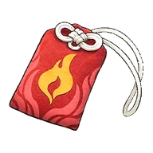
Амулет Рептиро
Аксессуар с высокой термостойкостью. Также значительно уменьшает огненный урон. Жаростойкость ур.3 Сокращение огненного урона ур.4
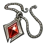
Амулет атакиРедкий · вес 2
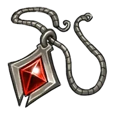
Амулет атаки
Аксессуар, увеличивающий силу атаки. Увеличение атаки ур.3
 Амулет бродячего торговцаЭпический · вес 2
Амулет бродячего торговцаЭпический · вес 2

Амулет бродячего торговца
Аксессуар с очень высокой устойчивостью к жаре и холоду. Также значительно увеличивает макс. переносимый вес игрока. Жаростойкость ур.3 / Морозостойкость ур.3 Увеличение макс. переносимого веса ур.4
 Амулет жизниРедкий · вес 2
Амулет жизниРедкий · вес 2
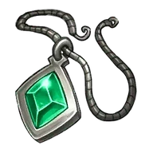
Амулет жизни
Аксессуар, увеличивающий HP.Увеличение HP ур.3
 Амулет защитыРедкий · вес 2
Амулет защитыРедкий · вес 2

Амулет защиты
Аксессуар, увеличивающий защиту. Увеличение защиты ур.3
 Амулет передового отрядаЭпический · вес 2
Амулет передового отрядаЭпический · вес 2

Амулет передового отряда
Аксессуар с очень высокой устойчивостью к жаре и холоду. Также значительно увеличивает HP.Жаростойкость ур.3 / Морозостойкость ур.3 Увеличение HP ур.4
 Амулет усердияРедкий · вес 2
Амулет усердияРедкий · вес 2
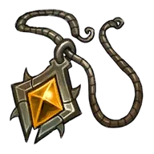
Амулет усердия
Аксессуар, увеличивающий скорость работы. Ускоренная работа ур.3
Антигравитационный поясНеобычный · вес 2
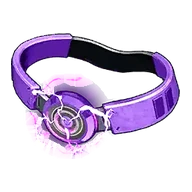
Антигравитационный пояс
Аксессуар, увеличивающий высоту прыжка игрока. Увеличение силы прыжка
 Ботинки воздушного рывкаРедкий · вес 2
Ботинки воздушного рывкаРедкий · вес 2
Ботинки воздушного рывка
Аксессуар, позволяющий игроку совершать рывок в воздухе. Рывок в воздухе +1
 Ботинки двойного прыжкаРедкий · вес 2
Ботинки двойного прыжкаРедкий · вес 2
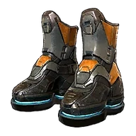
Ботинки двойного прыжка
Аксессуар, позволяющий игроку прыгать в воздухе. Дополнительный прыжок +1
 Ботинки двойного рывка в воздухеЭпический · вес 2
Ботинки двойного рывка в воздухеЭпический · вес 2

Ботинки двойного рывка в воздухе
Аксессуар, позволяющий игроку совершать двойной рывок в воздухе. Рывок в воздухе +2
 Ботинки тройного воздушного рывкаЛегендарный · вес 2
Ботинки тройного воздушного рывкаЛегендарный · вес 2
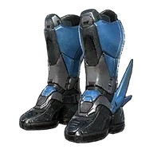
Ботинки тройного воздушного рывка
Аксессуар, позволяющий игроку совершать тройной рывок в воздухе. Рывок в воздухе +3
 Ботинки тройного прыжкаЭпический · вес 2
Ботинки тройного прыжкаЭпический · вес 2

Ботинки тройного прыжка
Аксессуар, позволяющий игроку совершать двойной прыжок в воздухе. Дополнительный прыжок +2
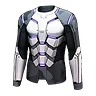
Взрывоустойчивое бельёЛегендарный · вес 2
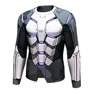
Взрывоустойчивое бельё
Легкое и прочное нижнее белье из особого волокна. Нейтрализует урон от взрывов. Иммунитет к урону от взрывов
 Воздухоход Mk-EXЭпический · вес 2
Воздухоход Mk-EXЭпический · вес 2
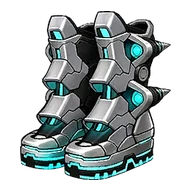
Воздухоход Mk-EX
Аксессуар, позволяющий совершать двойной прыжок в воздухе. Также позволяет выполнить два воздушных рывка. Дополнительный прыжок +2 Рывок в воздухе +2
 Воздухоход Mk-ⅠЭпический · вес 2
Воздухоход Mk-ⅠЭпический · вес 2
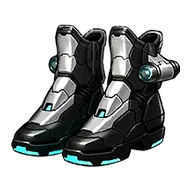
Воздухоход Mk-Ⅰ
Аксессуар, позволяющий совершать прыжок в воздухе. Также позволяет выполнить один воздушный рывок. Дополнительный прыжок +1 Рывок в воздухе +1
 Воздухоход Mk-ⅡЭпический · вес 2
Воздухоход Mk-ⅡЭпический · вес 2
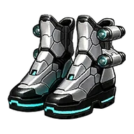
Воздухоход Mk-Ⅱ
Аксессуар, позволяющий совершать прыжок в воздухе. Также позволяет выполнить два воздушных рывка. Дополнительный прыжок +1 Рывок в воздухе +2
 Воздухоход Mk-ⅢЭпический · вес 2
Воздухоход Mk-ⅢЭпический · вес 2
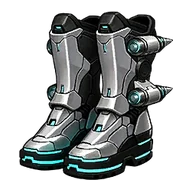
Воздухоход Mk-Ⅲ
Аксессуар, позволяющий совершать двойной прыжок в воздухе. Также позволяет выполнить один воздушный рывок. Дополнительный прыжок +2 Рывок в воздухе +1
 Жаро- и морозостойкое термобельёРедкий · вес 2
Жаро- и морозостойкое термобельёРедкий · вес 2

Жаро- и морозостойкое термобельё
Аксессуар, повышающий жаростойкость и морозостойкость. Жаростойкость ур.3 / Морозостойкость ур.3
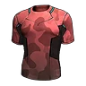
Жаростойкое термобельёРедкий · вес 2
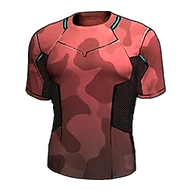
Жаростойкое термобельё
Аксессуар, повышающий жаростойкость. Жаростойкость ур.3
 Колокольчик ускорения ростаРедкий · вес 2
Колокольчик ускорения ростаРедкий · вес 2
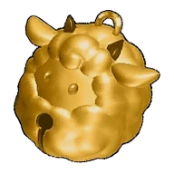
Колокольчик ускорения роста
Аксессуар, увеличивающий опыт, получаемый сражающимися вместе с вами Палами. Увеличение опыта Пала ур.3
 Кольцо БлейзхаулаЭпический · вес 2
Кольцо БлейзхаулаЭпический · вес 2

Кольцо Блейзхаула
Аксессуар, значительно снижающий травяной урон. Также значительно усиливает огненный урон сражающихся рядом Палов. Сокращение травяного урона ур.4 Увеличение огненного урона Палов ур.4
Кольцо ВаэлетаЭпический · вес 2

Кольцо Ваэлета
Аксессуар, значительно снижающий земляной урон. Также значительно усиливает травяной урон сражающихся рядом Палов. Сокращение земного урона ур.4 Увеличение травяного урона Палов ур.4
 Кольцо КатрессаЭпический · вес 2
Кольцо КатрессаЭпический · вес 2
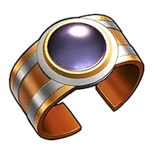
Кольцо Катресса
Аксессуар, значительно снижающий нейтральный урон. Также значительно усиливает тёмный урон сражающихся рядом Палов. Сокращение нейтрального урона ур.4 Увеличение тёмного урона Палов ур.4
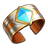
Кольцо КриолинксаЭпический · вес 2
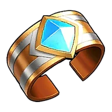
Кольцо Криолинкса
Аксессуар, значительно снижающий драконический урон. Также значительно усиливает ледяной урон сражающихся рядом Палов. Сокращение драконьего урона ур.4 Увеличение ледяного урона Палов ур.4
 Кольцо Менастинг ТерраЭпический · вес 2
Кольцо Менастинг ТерраЭпический · вес 2

Кольцо Менастинг Терра
Аксессуар, значительно снижающий грозовой урон. Также значительно усиливает земляной урон сражающихся рядом Палов. Сокращение урона молнии ур.4 Увеличение земного урона Палов ур.4
 Кольцо Фалерис АкваЭпический · вес 2
Кольцо Фалерис АкваЭпический · вес 2

Кольцо Фалерис Аква
Аксессуар, значительно снижающий огненный урон. Также значительно усиливает водный урон сражающихся рядом Палов. Сокращение огненного урона ур.4 Увеличение водного урона Палов ур.4
 Кольцо ФалерисаЭпический · вес 2
Кольцо ФалерисаЭпический · вес 2

Кольцо Фалериса
Аксессуар, значительно снижающий ледяной урон. Также значительно усиливает огненный урон сражающихся рядом Палов. Сокращение ледяного урона ур.4 Увеличение огненного урона Палов ур.4
 Кольцо Фенглоп ЛаксаЭпический · вес 2
Кольцо Фенглоп ЛаксаЭпический · вес 2

Кольцо Фенглоп Лакса
Аксессуар, значительно снижающий водный урон. Также значительно усиливает грозовой урон сражающихся рядом Палов. Сокращение водного урона ур.4 Увеличение грозового урона Палов ур.4
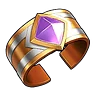
Кольцо ЭлфидранаЭпический · вес 2
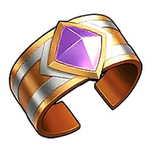
Кольцо Элфидрана
Аксессуар, значительно снижающий тёмный урон. Также значительно усиливает драконический урон сражающихся рядом Палов. Сокращение тёмного урона ур.4 Увеличение драконьего урона Палов ур.4
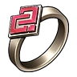
Кольцо доверияЭпический · вес 2

Кольцо доверия
Повышает доверие Палов к владельцу, пока аксессуар экипирован. Ускорение роста доверия у Палов в команде
 Кольцо защиты от водыРедкий · вес 2
Кольцо защиты от водыРедкий · вес 2

Кольцо защиты от воды
Аксессуар, сокращающий получаемый водный урон. Сокращение водного урона ур.3
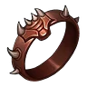
Кольцо защиты от драконовРедкий · вес 2
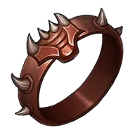
Кольцо защиты от драконов
Аксессуар, сокращающий получаемый урон от драконов. Сокращение драконьего урона ур.3
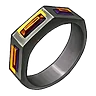
Кольцо защиты от землиРедкий · вес 2

Кольцо защиты от земли
Аксессуар, сокращающий получаемый земляной урон. Сокращение земного урона ур.3
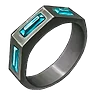
Кольцо защиты от льдаРедкий · вес 2
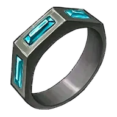
Кольцо защиты от льда
Аксессуар, сокращающий получаемый ледяной урон. Сокращение ледяного урона ур.3
 Кольцо защиты от молнииРедкий · вес 2
Кольцо защиты от молнииРедкий · вес 2
Кольцо защиты от молнии
Аксессуар, сокращающий получаемый электрический урон. Сокращение урона молнии ур.3
 Кольцо защиты от огняРедкий · вес 2
Кольцо защиты от огняРедкий · вес 2
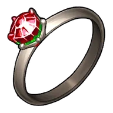
Кольцо защиты от огня
Аксессуар, сокращающий получаемый огненный урон. Сокращение огненного урона ур.3
 Кольцо защиты от травыРедкий · вес 2
Кольцо защиты от травыРедкий · вес 2

Кольцо защиты от травы
Аксессуар, сокращающий получаемый травяной урон. Сокращение травяного урона ур.3
 Кольцо защиты от тьмыРедкий · вес 2
Кольцо защиты от тьмыРедкий · вес 2
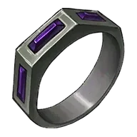
Кольцо защиты от тьмы
Аксессуар, сокращающий получаемый урон от тьмы. Сокращение тёмного урона ур.3
 Кольцо иллюзийЭпический · вес 2
Кольцо иллюзийЭпический · вес 2

Кольцо иллюзий
Аксессуар, увеличивающий время неуязвимости при перекатах и уклонениях. Увеличение времени неуязвимости при уклонении
 Кольцо носильщикаРедкий · вес 2
Кольцо носильщикаРедкий · вес 2
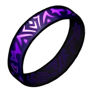
Кольцо носильщика
Увеличивает лимит переносимого веса. Увеличение макс. переносимого веса ур.3
 Кольцо сдерживанияРедкий · вес 2
Кольцо сдерживанияРедкий · вес 2
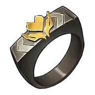
Кольцо сдерживания
Кольцо пацифиста. Носитель не может снизить HP цели ниже 1.Сдерживание силы
 Кольцо сопротивленияРедкий · вес 2
Кольцо сопротивленияРедкий · вес 2

Кольцо сопротивления
Аксессуар, сокращающий получаемый нейтральный урон. Сокращение нейтрального урона ур.3
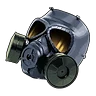
Маска от едкого туманаЛегендарный · вес 2
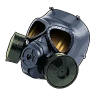
Маска от едкого тумана
Маска со специальной системой фильтрации. Нейтрализует урон от разъедающего тумана. Иммунитет к урону от ядовитого газа
 Морозостойкое термобельёРедкий · вес 2
Морозостойкое термобельёРедкий · вес 2

Морозостойкое термобельё
Аксессуар, повышающий морозостойкость. Морозостойкость ур.3
 Оберег АнубисаЭпический · вес 2
Оберег АнубисаЭпический · вес 2
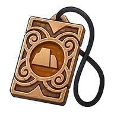
Оберег Анубиса
Аксессуар, повышающий защиту сражающихся рядом Палов. Также значительно усиливает их земляной урон. Увеличение защиты Пала ур.4 Увеличение земного урона Палов ур.4
 Оберег БлазамутаЭпический · вес 2
Оберег БлазамутаЭпический · вес 2

Оберег Блазамута
Аксессуар, повышающий защиту сражающихся рядом Палов. Также значительно усиливает их огненный урон. Увеличение защиты Пала ур.4 Увеличение огненного урона Палов ур.4
 Оберег ДжетрагонаЭпический · вес 2
Оберег ДжетрагонаЭпический · вес 2

Оберег Джетрагона
Аксессуар, повышающий защиту Палов, сражающихся вместе с тобой. Также значительно усиливает их Драконический урон. Увеличение защиты Пала ур.4 Увеличение драконьего урона Палов ур.4
 Оберег ЛилинЭпический · вес 2
Оберег ЛилинЭпический · вес 2

Оберег Лилин
Аксессуар, повышающий защиту сражающихся рядом Палов. Также значительно усиливает их травяной урон. Увеличение защиты Пала ур.4 Увеличение травяного урона Палов ур.4
 Оберег Лилин НоктаЭпический · вес 2
Оберег Лилин НоктаЭпический · вес 2

Оберег Лилин Нокта
Аксессуар, повышающий защиту сражающихся рядом Палов. Также значительно усиливает их тёмный урон. Увеличение защиты Пала ур.4 Увеличение тёмного урона Палов ур.4
 Оберег НептилиусаЭпический · вес 2
Оберег НептилиусаЭпический · вес 2
Оберег Нептилиуса
Аксессуар, повышающий защиту сражающихся рядом Палов. Также значительно усиливает их водный урон. Увеличение защиты Пала ур.4 Увеличение водного урона Палов ур.4
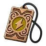
Оберег ОрсеркаЭпический · вес 2
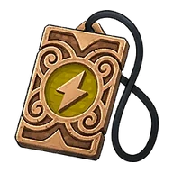
Оберег Орсерка
Аксессуар, повышающий защиту сражающихся рядом Палов. Также значительно усиливает их грозовой урон. Увеличение защиты Пала ур.4 Увеличение грозового урона Палов ур.4
 Оберег ФросталлионаЭпический · вес 2
Оберег ФросталлионаЭпический · вес 2
Оберег Фросталлиона
Аксессуар, повышающий защиту сражающихся рядом Палов. Также значительно усиливает их ледяной урон. Увеличение защиты Пала ур.4 Увеличение ледяного урона Палов ур.4
 Оберег ХарталисаЭпический · вес 2
Оберег ХарталисаЭпический · вес 2

Оберег Харталиса
Аксессуар, повышающий защиту сражающихся рядом Палов. Также значительно усиливает их нейтральный урон. Увеличение защиты Пала ур.4 Увеличение нейтрального урона Палов ур.4
 Очки талантаРедкий · вес 1
Очки талантаРедкий · вес 1
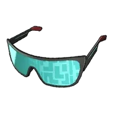
Очки таланта
Очки, позволяющие увидеть скрытые таланты Пала. Отображают значения HP, атаки и защиты по 100-балльной шкале.
 Очки укротителя ПаловЭпический · вес 2
Очки укротителя ПаловЭпический · вес 2
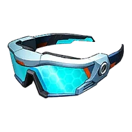
Очки укротителя Палов
Очки укротителя Палов. Носитель не может снизить HP цели ниже 1. Позволяют видеть скрытый потенциал Палов. Сдерживание силы
 Пояс Ворсект ТеррыЭпический · вес 2
Пояс Ворсект ТеррыЭпический · вес 2
Пояс Ворсект Терры
Аксессуар, значительно повышающий защиту и HP.Увеличение защиты ур.4 Увеличение HP ур.4
 Пояс для инструментов жителя островаЭпический · вес 2
Пояс для инструментов жителя островаЭпический · вес 2
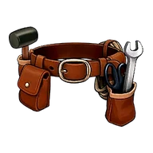
Пояс для инструментов жителя острова
Аксессуар, значительно увеличивающий макс. переносимый вес игрока. Также значительно повышает скорость работы. Увеличение макс. переносимого веса ур.4 Ускоренная работа ур.4
Свисток водной поддержкиРедкий · вес 2

Свисток водной поддержки
Аксессуар, усиливающий водный урон Палов, сражающихся вместе с вами. Увеличение водного урона Палов ур. 3
 Свисток грозовой поддержкиРедкий · вес 2
Свисток грозовой поддержкиРедкий · вес 2
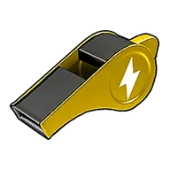
Свисток грозовой поддержки
Аксессуар, усиливающий грозовой урон Палов, сражающихся вместе с вами. Увеличение грозового урона Палов ур.3
 Свисток драконической поддержкиРедкий · вес 2
Свисток драконической поддержкиРедкий · вес 2

Свисток драконической поддержки
Аксессуар, усиливающий драконический урон Палов, сражающихся вместе с вами. Увеличение драконьего урона Палов ур.3
 Свисток защитной поддержкиРедкий · вес 2
Свисток защитной поддержкиРедкий · вес 2

Свисток защитной поддержки
Аксессуар, усиливающий защиту Палов, сражающихся вместе с вами. Увеличение защиты Пала ур.3
 Свисток земной поддержкиРедкий · вес 2
Свисток земной поддержкиРедкий · вес 2

Свисток земной поддержки
Аксессуар, усиливающий земной урон Палов, сражающихся вместе с вами. Увеличение земного урона Палов ур.3
 Свисток ледяной поддержкиРедкий · вес 2
Свисток ледяной поддержкиРедкий · вес 2
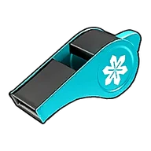
Свисток ледяной поддержки
Аксессуар, усиливающий ледяной урон Палов, сражающихся вместе с вами. Увеличение ледяного урона Палов ур.3
 Свисток наступательной поддержкиРедкий · вес 2
Свисток наступательной поддержкиРедкий · вес 2
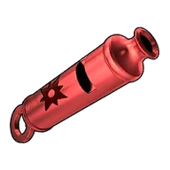
Свисток наступательной поддержки
Аксессуар, усиливающий силу атаки Палов, сражающихся вместе с вами. Увеличение атаки Пала ур.3
 Свисток нейтральной поддержкиРедкий · вес 2
Свисток нейтральной поддержкиРедкий · вес 2

Свисток нейтральной поддержки
Аксессуар, усиливающий нейтральный урон Палов, сражающихся вместе с вами. Увеличение нейтрального урона Палов ур.3
 Свисток огненной поддержкиРедкий · вес 2
Свисток огненной поддержкиРедкий · вес 2
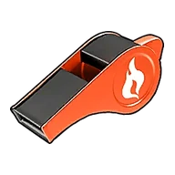
Свисток огненной поддержки
Аксессуар, усиливающий огненный урон Палов, сражающихся вместе с вами. Увеличение огненного урона Палов ур.3
 Свисток травяной поддержкиРедкий · вес 2
Свисток травяной поддержкиРедкий · вес 2
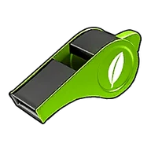
Свисток травяной поддержки
Аксессуар, усиливающий травяной урон Палов, сражающихся вместе с вами. Увеличение травяного урона Палов ур.3
Свисток тёмной поддержкиРедкий · вес 2
Свисток тёмной поддержки
Аксессуар, усиливающий тёмный урон Палов, сражающихся вместе с вами. Увеличение тёмного урона Палов ур.3
 Скипетр Божественного ДраконаЭпический · вес 2
Скипетр Божественного ДраконаЭпический · вес 2

Скипетр Божественного Дракона
Аксессуар, увеличивающий атаку сражающихся рядом Палов. Также заметно усиливает наносимый ими драконический урон. Увеличение атаки Пала ур.4 Увеличение драконьего урона Палов ур.4
 Скипетр Земного ИмператораЭпический · вес 2
Скипетр Земного ИмператораЭпический · вес 2
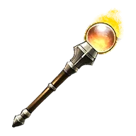
Скипетр Земного Императора
Аксессуар, увеличивающий атаку сражающихся рядом Палов. Также заметно усиливает наносимый ими земляной урон. Увеличение атаки Пала ур.4 Увеличение земного урона Палов ур.4
 Скипетр Императора МолнииЭпический · вес 2
Скипетр Императора МолнииЭпический · вес 2
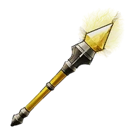
Скипетр Императора Молнии
Аксессуар, увеличивающий атаку сражающихся рядом Палов. Также заметно усиливает наносимый ими грозовой урон. Увеличение атаки Пала ур.4 Увеличение грозового урона Палов ур.4
 Скипетр Короля ДуховЭпический · вес 2
Скипетр Короля ДуховЭпический · вес 2

Скипетр Короля Духов
Аксессуар, увеличивающий атаку сражающихся рядом Палов. Также заметно усиливает наносимый ими травяной урон. Увеличение атаки Пала ур.4 Увеличение травяного урона Палов ур.4
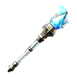
Скипетр Ледяного ИмператораЭпический · вес 2
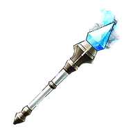
Скипетр Ледяного Императора
Аксессуар, увеличивающий атаку сражающихся рядом Палов. Также заметно усиливает наносимый ими ледяной урон. Увеличение атаки Пала ур.4 Увеличение ледяного урона Палов ур.4
 Скипетр Морского ИмператораЭпический · вес 2
Скипетр Морского ИмператораЭпический · вес 2

Скипетр Морского Императора
Аксессуар, увеличивающий атаку сражающихся рядом Палов. Также заметно усиливает наносимый ими водный урон. Увеличение атаки Пала ур.4 Увеличение водного урона Палов ур.4
 Скипетр Огненного ИмператораЭпический · вес 2
Скипетр Огненного ИмператораЭпический · вес 2
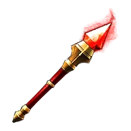
Скипетр Огненного Императора
Аксессуар, увеличивающий атаку сражающихся рядом Палов. Также заметно усиливает наносимый ими огненный урон. Увеличение атаки Пала ур.4 Увеличение огненного урона Палов ур.4
 Скипетр Повелителя ПреисподнейЭпический · вес 2
Скипетр Повелителя ПреисподнейЭпический · вес 2
Скипетр Повелителя Преисподней
Аксессуар, увеличивающий атаку сражающихся рядом Палов. Также заметно усиливает наносимый ими тёмный урон. Увеличение атаки Пала ур.4 Увеличение тёмного урона Палов ур.4
 Скипетр Святого НебаЭпический · вес 2
Скипетр Святого НебаЭпический · вес 2
Скипетр Святого Неба
Аксессуар, увеличивающий атаку сражающихся рядом Палов. Также заметно усиливает наносимый ими нейтральный урон. Увеличение атаки Пала ур.4 Увеличение нейтрального урона Палов ур.4
 Эмблема ВанфуЭпический · вес 2
Эмблема ВанфуЭпический · вес 2
Эмблема Ванфу
Аксессуар, значительно повышающий атаку игрока. Также увеличивает атаку Палов. Увеличение атаки ур.4 Увеличение атаки Пала ур.4
 Эмблема СилвегисаЭпический · вес 2
Эмблема СилвегисаЭпический · вес 2
Эмблема Силвегиса
Аксессуар, значительно повышающий защиту игрока. Также увеличивает защиту Палов. Увеличение защиты ур.4 Увеличение защиты Пала ур.4